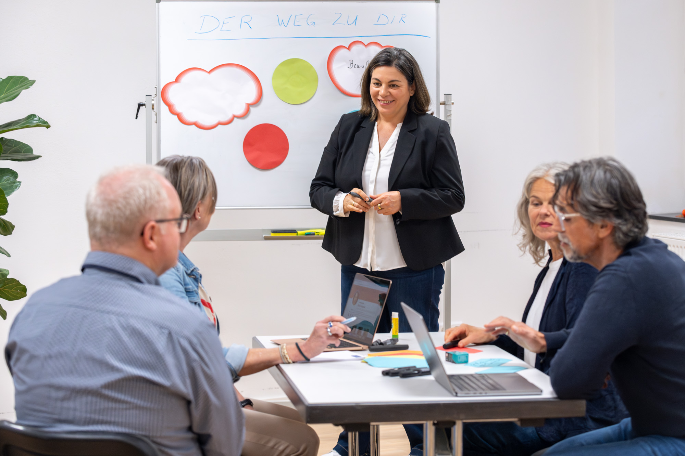
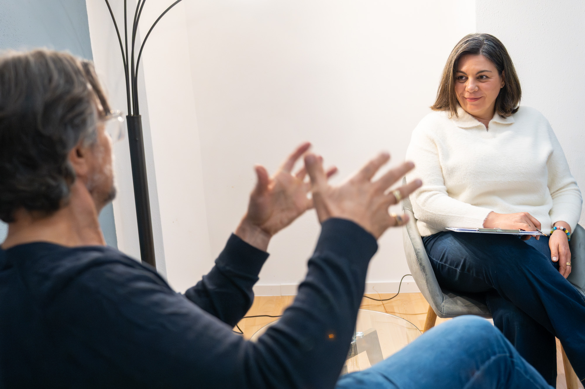

KI-Führerschein für Schüler
Grundlagen, Halluzinationen, Datenschutz, Prompting und KI als Lernhelfer – mit kritischem Denken statt blindem Abschreiben.
Schülerkurs anfragen →Wir machen Künstliche Intelligenz verständlich, praktisch und kritisch nutzbar – für Schüler, Berufstätige und Menschen, die ohne Technikstress einsteigen möchten.

Es reicht nicht, ein Tool bedienen zu können. Entscheidend wird, gute Fragen zu stellen, Ergebnisse zu prüfen, Daten zu schützen und KI sinnvoll in den eigenen Alltag zu integrieren.
Verstehen, anwenden, kritisch prüfen und Verantwortung übernehmen.
Grundlagen, Halluzinationen, Datenschutz, Prompting und KI als Lernhelfer – mit kritischem Denken statt blindem Abschreiben.
Schülerkurs anfragen →Praktische Anwendungen für Texte, Ideen, Recherche, Struktur und produktive Arbeitsabläufe – verständlich und direkt umsetzbar.
Nächsten Kurs ansehen →Ein ruhiger Einstieg in ChatGPT & Co. Schritt für Schritt, ohne Fachsprache und mit viel Raum zum Ausprobieren.
Platz anfragen →Nicht möglichst viel KI.
Sondern möglichst sinnvoll.

Grundbegriffe, Funktionsweise und typische Fehler werden so erklärt, dass sie nachvollziehbar bleiben.
Konkrete Prompts und Anwendungen statt abstrakter Tool-Demonstrationen.
Kritisches Denken, Quellenbewusstsein und Verantwortung bleiben Teil jeder Anwendung.
Schreiben Sie uns, für wen Sie einen Einstieg suchen. Wir ordnen das passende Format ein.